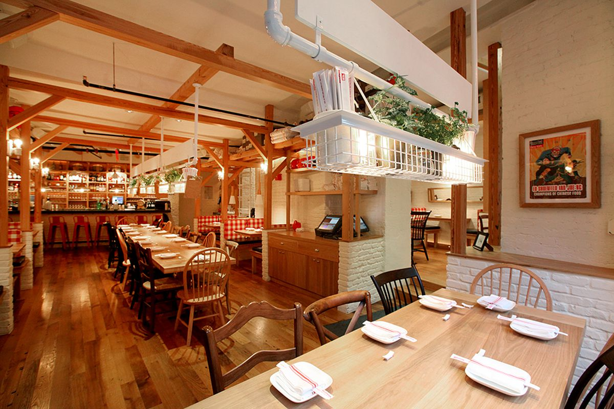

La Capitana is a family owned restaurant chain the was founded in 2007 and specializes in all sorts Cajun flavored seafood dishes. Founder Luis Coreas had a vsion of wanti g to spread his love of Cajun flavors to the rest of the world with his business. He opened a restaurant in Encino, California and it was a big hit with the locals. News soon spread and people from around Los Angeles gathered to get a taste of the savory Cajun flavors. After 2 hard working years and running a sucessful restaurant, Luis was able to open up 3 more locations around Los Angeles to further spread his love for Cajun Seafood.

Questions or Concerns? contact us at contact @lacapitana.com